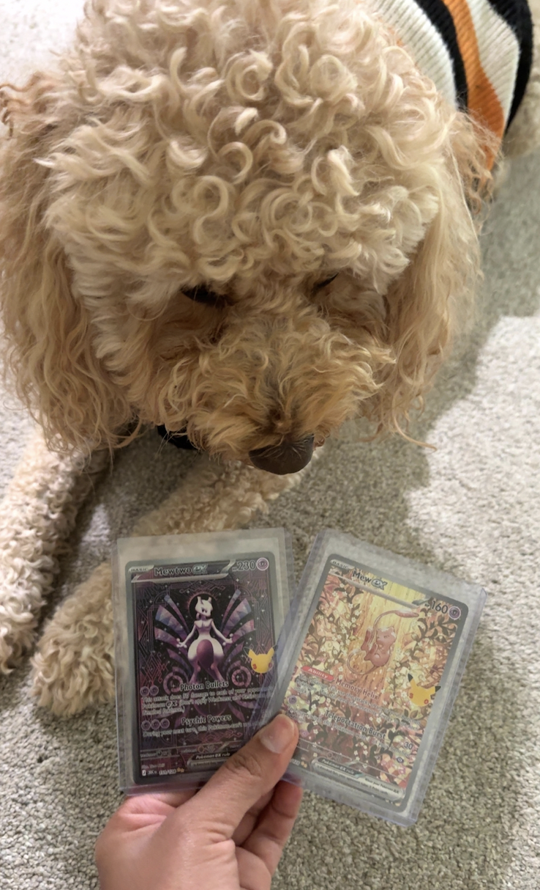

My Interests
- Technology and design
- Photography
- Cooking and trying new recipes
- Learning new skills
Some Tips for Success I Believe In
- Start with one clear goal.
- Stay consistent each day.
- Keep improving little by little.
Hello! My name is Sam, and I am a student who enjoys learning, creating, and exploring new ideas.
I like to spend time reading, walking, and trying new foods whenever I can.
"Small habits and steady effort can lead to big results."
| Category | Favorite |
|---|---|
| Season | Fall |
| TV Show | One Piece |
| Food | Pasta |
